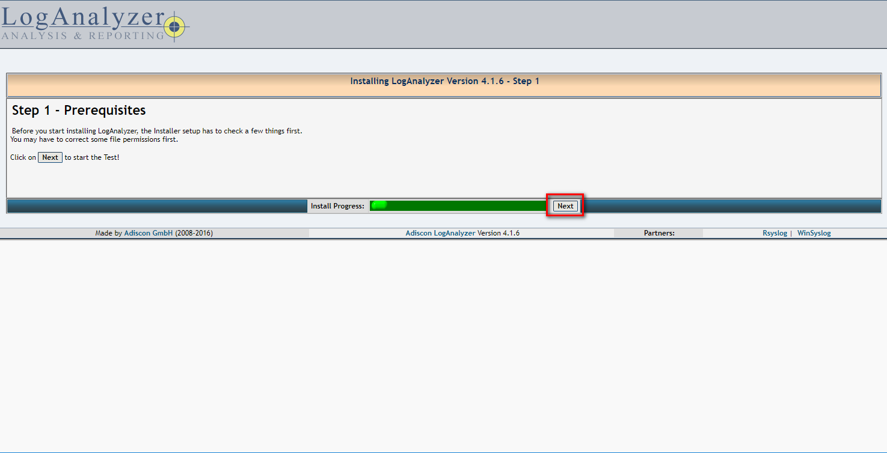
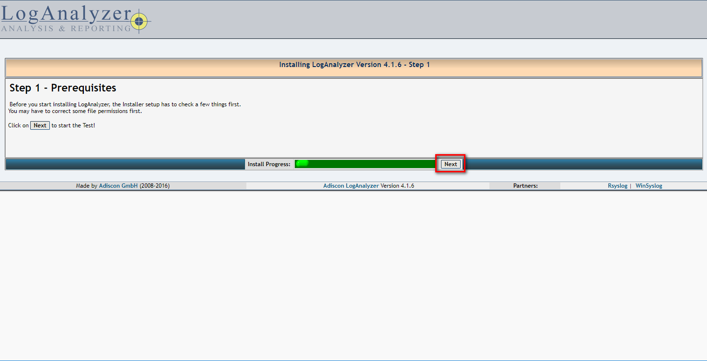
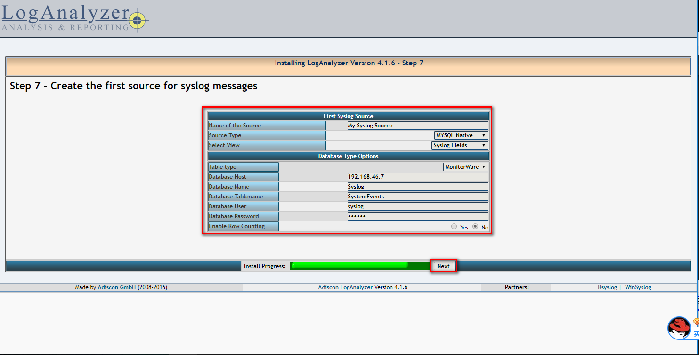
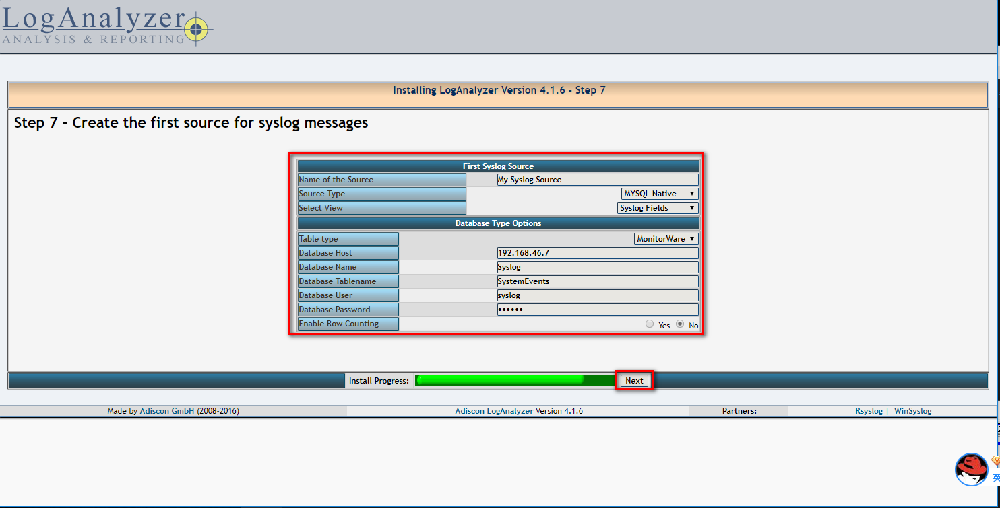

11.3. 日志管理系统搭建¶
这个文章主要介绍使用日志服务器收集多个服务器的日志信息到mysql数据库中，然后使用 分析工具来分析日志和监控。
11.3.1. 架构图¶

11.3.2. 日志服务器配置¶
[root@centos-7 ~]$yum install rsyslog-mysql mariadb-server
[root@centos-7 ~]$systemctl restart mariadb
[root@centos-7 ~]$ss -tunl |grep 3306
tcp LISTEN 0 50 *:3306 *:*
[root@centos-7 ~]$mysql_secure_installation
[root@centos-7 ~]$mysql -u root -p </usr/share/doc/rsyslog-8.24.0/mysql-createDB.sql
[root@centos-7 ~]$mysql -u root -p
Enter password:
Welcome to the MariaDB monitor. Commands end with ; or \g.
Your MariaDB connection id is 13
Server version: 5.5.56-MariaDB MariaDB Server
Copyright (c) 2000, 2017, Oracle, MariaDB Corporation Ab and others.
Type 'help;' or '\h' for help. Type '\c' to clear the current input statement.
MariaDB [(none)]> use Syslog
Reading table information for completion of table and column names
You can turn off this feature to get a quicker startup with -A
Database changed
MariaDB [Syslog]> show tables;
+------------------------+
| Tables_in_Syslog |
+------------------------+
| SystemEvents |
| SystemEventsProperties |
+------------------------+
2 rows in set (0.00 sec)
MariaDB [Syslog]> grant all on Syslog.* to syslog@'192.168.46.%' identified by 'syslog';
Query OK, 0 rows affected (0.00 sec)
11.3.3. 应用服务器配置¶
# app1上操作
[root@centos-158 ~]# yum install rsyslog-mysql
[root@centos-158 ~]# rpm -ql rsyslog-mysql
/usr/lib64/rsyslog/ommysql.so
/usr/share/doc/rsyslog-8.24.0/mysql-createDB.sql
$ModLoad ommysql
*.info :ommysql:192.168.46.7,Syslog,syslog,syslog
[root@centos-158 yum.repos.d]# systemctl restart rsyslog
# 复制一份到app2
[root@centos-158 ~]# scp /etc/rsyslog.conf 192.168.46.159:/etc/
# app2安装包
[root@centos-159 yum.repos.d]# yum install rsyslog-mysql
# 重启服务
[root@centos-159 yum.repos.d]# systemctl restart rsyslog
11.3.4. 日志服务器测试¶
# app1的服务器发送一个日志
[root@centos-158 ~]# logger auth.* "this is a test"
# app2的服务器发送一个日志
[root@centos-158 ~]# logger auth.* "this is another test"
# 日志服务器查看下
MariaDB [Syslog]> select message,fromhost,facility from SystemEvents where message like '%test%';
+-----------------------------+------------+----------+
| message | fromhost | facility |
+-----------------------------+------------+----------+
| auth.* this is a test | centos-158 | 1 |
| auth.* this is another test | centos-159 | 1 |
+-----------------------------+------------+----------+
2 rows in set (0.00 sec)
11.3.5. 日志分析服务器配置¶
[root@centos-152 ~]# yum install httpd php php-mysql php-gd
[root@centos-152 ~]# systemctl restart httpd
[root@centos-152 ~]# ss -tunl |grep 80
tcp LISTEN 0 128 :::80 :::*
[root@centos-152 /]# cd /usr/src
[root@centos-152 src]# wget http://download.adiscon.com/loganalyzer/loganalyzer-4.1.6.tar.gz
[root@centos-152 src]# tar xf loganalyzer-4.1.6.tar.gz
[root@centos-152 src]# mv loganalyzer-4.1.6 /var/www/html/log
[root@centos-152 src]# cd /var/www/html/log
[root@centos-152 log]# cat contrib/*
#!/bin/sh
touch config.php
chmod 666 config.php
#!/bin/sh
chmod 644 config.php
[root@centos-152 log]# touch src/config.php
[root@centos-152 log]# chmod 666 src/config.php
接下来打开浏览器输入http://192.168.46.152/log/src进行访问
具体步骤如下
 


 



11.3.6. 完善工作¶
[root@centos-152 log]# chmod 644 src/config.php